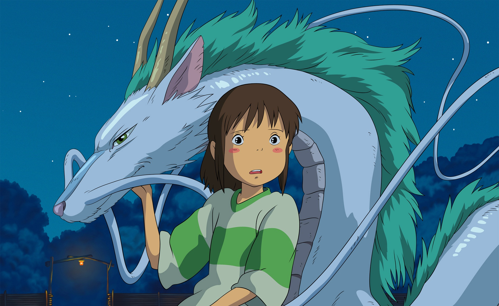

Página Inicial
História

Filmografia
Studio Ghibli
Se estiver acessando essa página com o celular, vire a tela para melhor visualização.
Para assistir, basta clicar sobre o título desejado.
Nausicaä do Vale do Vento (1984)
O Castelo no Céu (1986)
Meu Amigo Totoro (1988)
Túmulo dos Vagalumes (1988)
O Serviço de Entregas da Kiki (1989)
Memórias de Ontem (1991)
Porco Rosso: O Último Herói Romântico (1992)
Eu Posso Ouvir o Oceano (1993)
PomPoko: A Grande Batalha dos Guaxinins (1994)
Sussurros do Coração (1995)
Princesa Mononoke (1997)
Meus Vizinhos os Yamadas (1999)
A Viagem de Chihiro (2001)
O Reino dos Gatos (2002)
O Castelo Animado (2004)
Contos de Terramar (2006)
Ponyo: Uma Amizade Que Veio do Mar (2008)
O Mundo dos Pequeninos (2010)
Da Colina Kokuriko (2011)
Vidas ao Vento (2013)
O Conto da Princesa Kaguya (2013)
As Memórias de Marnie (2014)
Aya e a Bruxa (2020)